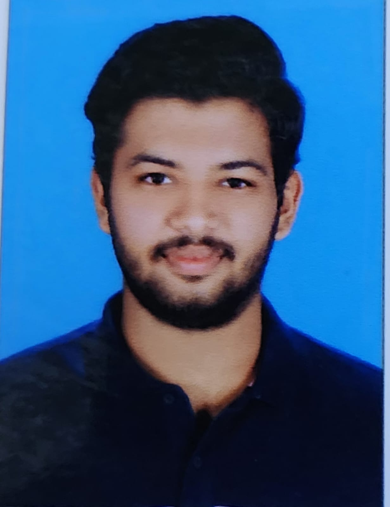

About Me

I’m a second-year B.Tech student at NMAM Institute of Technology with a strong enthusiasm for web development and emerging technologies. I believe the best way to learn is by doing, which is why I spend time building real-world projects to deepen my understanding. Outside of academics and tech, I enjoy driving—something that keeps me grounded and energized. I aim to keep exploring, learning, and contributing to projects that make a difference.
Skills
- Tech Development
- C & Python Programming
- Effective Communication
Academic Details
| Qualification | Institution/School Name | Year of Completion | % or CGPA |
|---|---|---|---|
| Higher Secondary Education | GHSS Kuttamath | 2024 | 88% |
| SSLC | Govt. High School Kuttamath | 2022 | 98% |